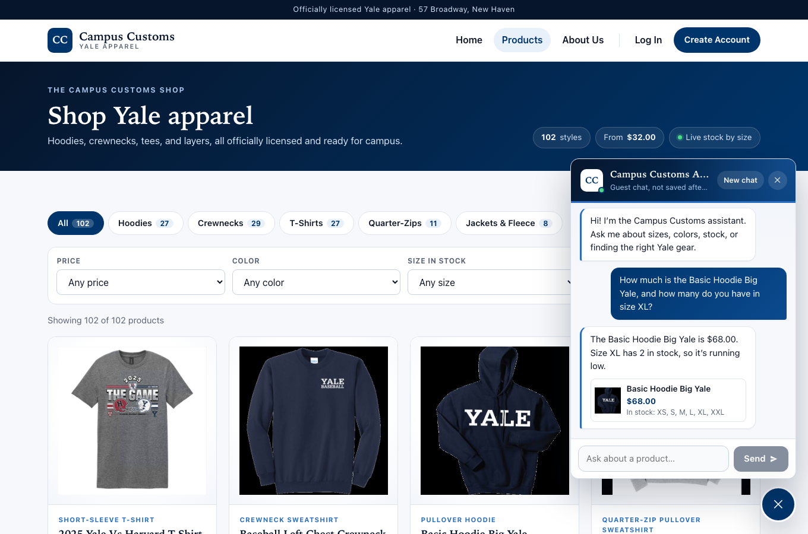
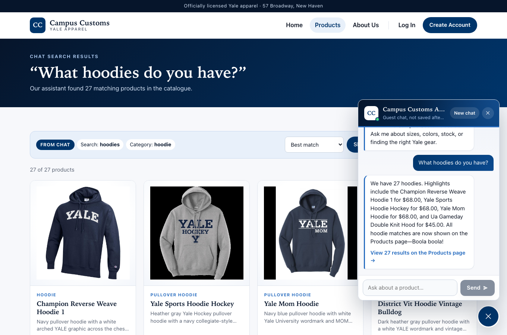
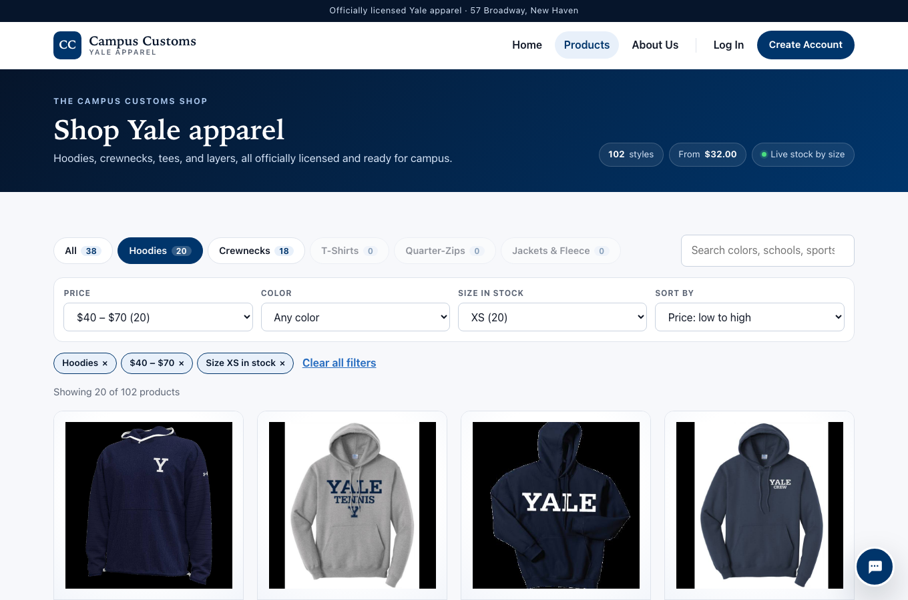

1.Inventory and Price Check
PASS- What was tested
- I asked the chatbot, “How much is the Basic Hoodie Big Yale, and how many do you have in size XL?”, and compared its answer with a direct query of campus_customs.db.
- What the screenshot proves
- The chatbot answered “$68.00” and “Size XL has 2 in stock”, exactly the database values. The audit log shows it got them from its
lookup_productandcheck_stockdatabase tools. - Verified in the database
- Product: Basic Hoodie Big Yale
- Price: $68.00
- Size XL: 2 units
- All sizes: 60 units

2.Dynamic Search-Result Cards
PASS- What was tested
- I asked the chatbot, “What hoodies do you have?” (category: hoodies), then clicked the first card it produced.
- What the screenshot proves
- The agent ran a
search_productscatalogue search, and the Products page switched to the 27 hoodie cards that search returned, each a real catalogue product at its database price. - Verified
- Category: hoodies
- Cards shown: 27
- Clicked “Champion Reverse Weave Hoodie 1” → opened /products/champion-reverse-weave-hoodie-1

3.Problem 9 Usability Feature
PASS- What was tested
- The Problem 9 product filtering and sorting feature on the Products page. I chose Hoodies, Price $40–$70, Size in stock XS and Sort price low to high.
- What the screenshot proves
- The page narrowed to 20 of 102 products, the same 20 a direct database query returns, sorted by price. It shows a removable pill for each active filter and a count beside every option.
- Verified
- Filters: Hoodies · $40–$70 · XS
- Shown / expected: 20 / 20
- Sort: price low → high
